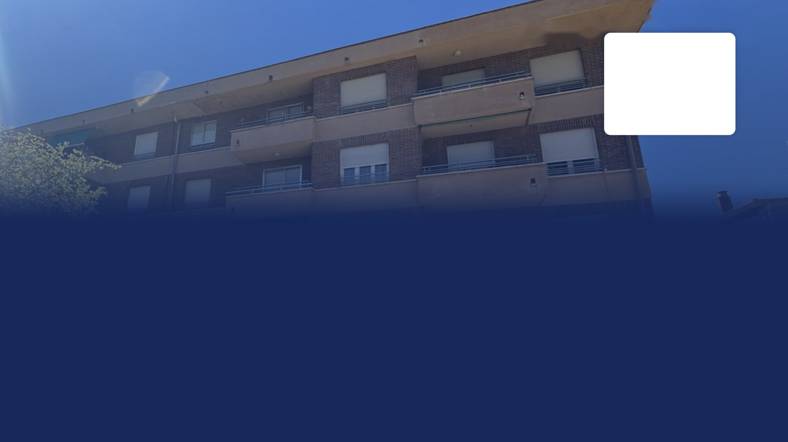
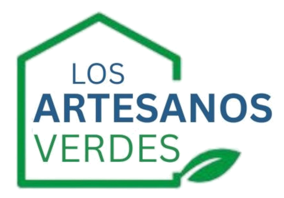
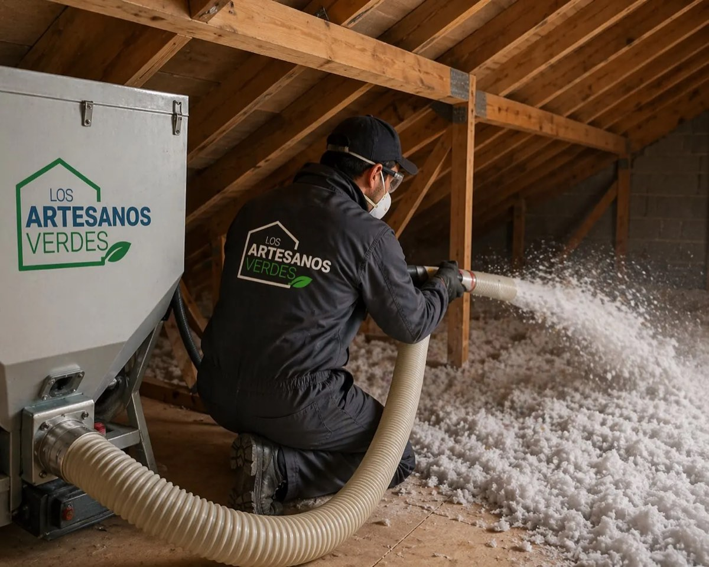
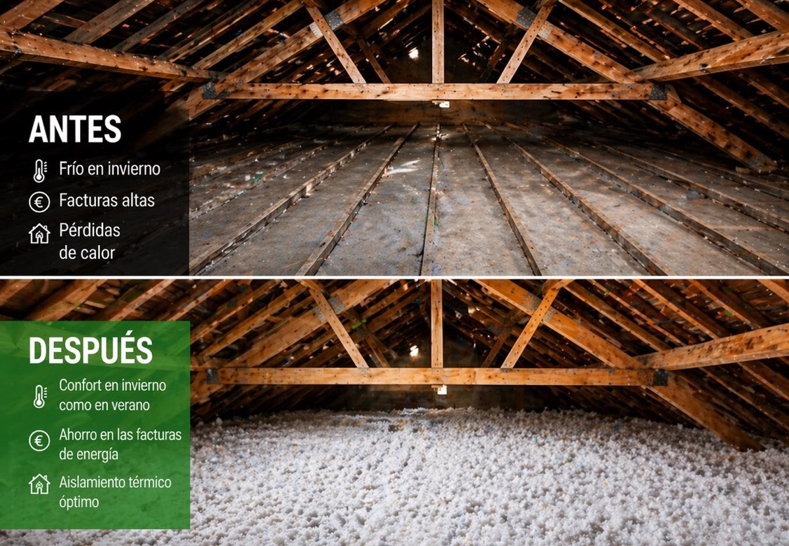

Propuesta para comunidades de propietarios
Financiación privada del sistema CAE·Sin obras en las viviendas·En una jornada
Nuestra propuesta
La obra se enmarca en el sistema de Certificados de Ahorro Energético (CAE, Real Decreto 36/2023). La Comunidad cede el ahorro energético generado y nuestra empresa, Los Artesanos Verdes, realiza la obra completa: material, mano de obra y gestión del expediente.
La financiación privada del sistema CAE puede cubrir gran parte de la inversión; en determinados casos, la actuación puede quedar cubierta al 100 %.
Importe sujeto a estudio técnico previo y a la normativa CAE vigente (RD 36/2023).
Primas sujetas a verificación del ahorro por una entidad acreditada por ENAC.
Los Artesanos Verdes · Propuesta para comunidades
Lo que aportamos al edificio
Lana mineral insuflada (ISOVER Isolene 4 o Knauf Supafil Loft 045) o rollos de lana mineral VOLCALIS EASY desenrollados sobre el suelo del desván, según el edificio. Material y mano de obra incluidos, en una jornada.
Espesor medido en varios puntos, fotos fechadas y geolocalizadas.
Un técnico certificador habilitado emite el certificado de eficiencia energética antes y después de la obra. El certificado final, con la nueva calificación del edificio, se inscribe en el registro oficial de la comunidad autónoma.
Acuerdo de cesión del ahorro, justificante y factura: toda la gestión del expediente CAE corre de nuestra cuenta.
La escala oficial del certificado: su edificio recibe su calificación energética tras el aislamiento.
Los límites de cada letra dependen de la zona climática.
Los Artesanos Verdes · Propuesta para comunidades
Beneficios para la Comunidad
El calor sube y se escapa por la cubierta: al aislarla, todo el edificio gana en confort, en invierno y en verano, no solo la última planta.
Menos pérdidas por la cubierta, lo que se traduce en menos gasto en calefacción y aire acondicionado para toda la Comunidad.
Visita técnica e instalación el mismo día, sin molestias para los vecinos.
Le entregamos el certificado de eficiencia energética (CEE) del edificio, antes y después, con reportaje fotográfico fechado y geolocalizado.
Los Artesanos Verdes · Propuesta para comunidades
Nuestra intervención


Los Artesanos Verdes · Propuesta para comunidades
Aislamiento del desván o buhardilla
Tres aislantes de lana mineral, elegidos según el edificio. Valores de las fichas técnicas de los fabricantes.
ISOVER
Lana mineral insuflada (soplada).
También en 300 mm: R = 6,50 m²·K/W.
Knauf Insulation
Lana mineral insuflada (soplada).
VOLCALIS
Lana mineral en rollo revestida de papel kraft, desenrollada sobre el suelo del desván.
Los Artesanos Verdes · Propuesta para comunidades
Ejemplo real · estimaciones de los certificados antes y después
−93 %
de pérdidas por la cubierta (estimado)
Transmitancia del techo: de 2,50 a 0,18 W/m²·K
−29 %
de demanda de calefacción (estimado)
De 271,5 a 192,3 kWh/m² al año
−27 %
de consumo de energía (estimado)
Energía primaria no renovable: de 428,3 a 311,0 kWh/m² al año
F → E
calificación estimada de emisiones de CO₂
De 108,6 a 78,8 kg CO₂/m² al año (−27 %)
Estimaciones, no garantizadas. Valores obtenidos de los certificados energéticos oficiales emitidos antes y después de una obra real (vivienda de 204 m², septiembre de 2026, 220 mm de lana mineral insuflada), calculados con el procedimiento oficial CE3X en condiciones normalizadas. Son orientativos y pueden diferir de los consumos reales según el uso, la ocupación, el clima y las características de cada edificio. No constituyen un compromiso de resultado.
Los Artesanos Verdes · Propuesta para comunidades
Sencillo y documentado
1
Envíenos las fotos de la buhardilla y la nota simple o la escritura.
Respuesta en 24 h.
2
Ustedes convocan la Junta.
Se vota el aislamiento y la cesión del CAE.
3
Envíenos el acta firmada, el CIF y los DNI.
Acta con firma digital del Presidente o del Administrador.
4
Nuestro técnico realiza el certificado energético.
El mismo día, aislamos la buhardilla.
5
El Presidente y el Administrador firman el fin de obra.
Firma digital: Presidente o Administrador.
Los Artesanos Verdes · Propuesta para comunidades
Lista de documentos
Firma digital (acta y fin de obra): firman los dos, pero basta una sola firma digital: la del Presidente o la del Administrador. Si es el Administrador, con el certificado de representante de la empresa administradora (no un certificado personal).
Todos los documentos: escaneo completo y legible en PDF, sin tachaduras · actas de 2025 o posteriores.
Los Artesanos Verdes · Propuesta para comunidades
Empiece por el paso 1: envíenos las fotos de la buhardilla y la nota simple o la escritura del edificio.
Los Artesanos Verdes SL · Financiación privada del sistema CAE: importe sujeto a estudio técnico previo y a la normativa CAE vigente (RD 36/2023).
Primas sujetas a verificación del ahorro por una entidad acreditada por ENAC.
Los Artesanos Verdes · Propuesta para comunidades